6.5 Length of Curves¶
Guiding question
How far do you walk if you follow a curved path? For a straight path the answer is the distance formula, which is Pythagoras’ theorem. For a curved path the idea of this section is to approximate the curve by a polygon, a chain of straight segments whose lengths we know, and to let the polygons follow the curve more and more closely. Each segment of the polygon is the hypotenuse of a small right triangle with legs \(\Delta x\) and \(\Delta y\), the Mean Value Theorem turns \(\Delta y/\Delta x\) into a slope \(f'\), and the sum of the segment lengths becomes a Riemann sum for \(\int_a^b\sqrt{1+f'(x)^2}\,dx\). We start by saying precisely what the length of a curve means (the least number that no inscribed polygon exceeds), prove the formula from that definition, and then use it. The formula has a catch: the square root rarely has an antiderivative that we can write down. So the examples fall into three kinds: curves for which \(1+f'^2\) is a perfect square, curves that need only a substitution, and curves whose integral we can only set up and evaluate numerically. A curve may also be steeper than any slope at an endpoint (a vertical tangent); then we describe it as \(x=g(y)\) instead.
By the end of this section you should be able to:
-
explain what the length of a curve means (polygons, the supremum) and why the length of a segment is its distance;
-
prove and use \(L=\int_a^b\sqrt{1+f'(x)^2}\,dx\) for a graph \(y=f(x)\) and \(L=\int_c^d\sqrt{1+g'(y)^2}\,dy\) for \(x=g(y)\);
-
choose \(x\) or \(y\) as the variable when a tangent is vertical, and recognize curves for which \(1+f'^2\) is a perfect square;
-
set up the integral and give its numerical value when it cannot be evaluated by Calculus I methods, and test the value against the chord and a polygon;
-
find the circumference of a circle from the formula, and bound the length of a curve from below and above.
Approximating a curve by a polygon¶
Let \(f\) be continuous on \([a,b]\) and let \(C\) be its graph. Choose points \(a=x_0<x_1<\cdots<x_n=b\) (a partition \(\Pi\)) and join the points \(P_k=(x_k,f(x_k))\) on the curve by straight segments. The result is a polygon inscribed in \(C\). Write \(\Delta x_k=x_k-x_{k-1}>0\) and \(\Delta y_k=f(x_k)-f(x_{k-1})\). The \(k\)th segment is the hypotenuse of a right triangle with legs \(\Delta x_k\) and \(\abs{\Delta y_k}\), so by the distance formula its length is \(\sqrt{\Delta x_k^2+\Delta y_k^2}\), and the polygon has length
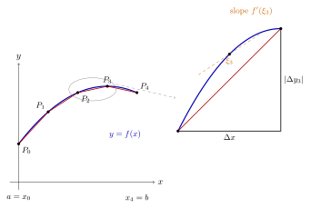
Figure. The polygon \(P_0P_1P_2P_3P_4\) and a magnified view of the third segment (vertical scale exaggerated). The segment is the hypotenuse of a right triangle with legs \(\Delta x\) and \(\abs{\Delta y_3}\); the Mean Value Theorem gives a point \(\xi_3\) between \(x_2\) and \(x_3\) where the tangent (dashed) is parallel to the segment, so \(\Delta y_3=f'(\xi_3)\,\Delta x\).
Definition 6.5.1: Length of a curve
The length \(L\) of the graph of \(f\) on \([a,b]\) is the supremum (the least upper bound) of the lengths \(\ell(\Pi)\) of all inscribed polygons, taken over all partitions \(\Pi\) of \([a,b]\). If the polygon lengths are not bounded above, the curve has no finite length.
Why this definition. A straight segment is the shortest path between its endpoints, so a polygon inscribed in a curve is never longer than the curve; and putting in more vertices can only make the polygon longer (Theorem 6.5.2). So the polygon lengths creep up towards a limit, and the length of the curve is the number they cannot pass. The same definition works for any curve traced by a continuous map \(\gamma(t)=(X(t),Y(t))\), \(a\le t\le b\), with vertices \(\gamma(t_k)\) and the same polygon length \(\ell=\sum\abs{\gamma(t_k)-\gamma(t_{k-1})}\). We need this for a curve \(x=g(y)\) (the map \(y\mapsto(g(y),y)\)) and for circles.
What the proofs use. Four facts, all from Calculus I or geometry: (F1) the distance formula and the triangle inequality, \(\abs{PR}\le\abs{PQ}+\abs{QR}\) for points of the plane; (F2) the Mean Value Theorem and the Fundamental Theorem of Calculus (Theorem 6.1.2); (F3) the integral preserves inequalities and is additive over adjacent intervals; (F4) if \(h\) is continuous on \([a,b]\), then Riemann sums \(\sum h(\xi_k)\Delta x_k\) with \(\xi_k\in[x_{k-1},x_k]\) get as close as we like to \(\int_a^bh\) once every \(\Delta x_k\) is small enough, whatever the points \(\xi_k\) (this is the definition of the integral). Nothing else is needed: in particular we prove below that a graph with a continuous derivative has a finite length, so no appendix section is required. (Appendix I shows that the length of a curve traced once does not depend on the parametrization, Theorem I.4.)
Knowledge Check 6.5.1: A two-segment polygon
Inscribe in the graph of \(y=x^2\) on \([0,1]\) the polygon with vertices at \(x=0\), \(x=\frac12\) and \(x=1\). Find its length, and compare it with the chord from \((0,0)\) to \((1,1)\).
Pause and think 6.5.1: Never too long
Why can an inscribed polygon never be longer than the curve it is inscribed in, and why does adding a vertex never make it shorter? What does this tell you about whether the sum of the segment lengths overestimates or underestimates the length of the curve?
Answer and discussion
A straight segment is the shortest path between its two endpoints, so replacing a piece of the curve between two vertices by the segment cannot make it longer; that is why the polygon is never longer than the curve. Adding a vertex \(Q\) replaces a segment \(P_{k-1}P_k\) by \(P_{k-1}Q\) and \(QP_k\), and the triangle inequality \(\abs{P_{k-1}P_k}\le\abs{P_{k-1}Q}+\abs{QP_k}\) says the new path is not shorter. So the polygon sums never overestimate: they climb towards a limit from below, and the length of the curve is the least number that no polygon exceeds.
Theorem 6.5.2: Basic properties of length
Let \(\gamma:[a,b]\to\R^2\) be continuous, with length \(L\) as in Definition 6.5.1.
(1) Adding a vertex to a polygon does not shorten it. Hence \(\ell(\Pi)\ge\abs{\gamma(b)-\gamma(a)}\) for every partition, and \(L\ge\abs{\gamma(b)-\gamma(a)}\): the length is at least the chord.
(2) (Additivity.) For \(a<c<b\), \(L[a,b]=L[a,c]+L[c,b]\) (both sides may be infinite).
(3) (Rigid motions.) If \(\varphi\) is a rigid motion of the plane (a translation, rotation or reflection, any map with \(\abs{\varphi(P)\varphi(Q)}=\abs{PQ}\)), then \(\varphi\circ\gamma\) has the same length as \(\gamma\). Running the curve in the opposite direction does not change its length.
Proof. (1) Let \(Q\) be a new vertex lying between \(P_{k-1}\) and \(P_k\) along the curve. By the triangle inequality \(\abs{P_{k-1}P_k}\le\abs{P_{k-1}Q}+\abs{QP_k}\), so replacing the segment \(P_{k-1}P_k\) by the two segments through \(Q\) does not decrease the length; repeating this adds any finite number of vertices. The partition \(\{a,b\}\) gives the single segment from \(\gamma(a)\) to \(\gamma(b)\), of length \(\abs{\gamma(b)-\gamma(a)}\), and every partition is obtained from it by adding vertices, so \(\ell(\Pi)\ge\abs{\gamma(b)-\gamma(a)}\), and the supremum is at least this.
(2) Let \(\Pi'\) be a partition of \([a,c]\) and \(\Pi''\) one of \([c,b]\). Together they form a partition of \([a,b]\) whose polygon has length \(\ell(\Pi')+\ell(\Pi'')\), so \(L[a,b]\ge\ell(\Pi')+\ell(\Pi'')\). Taking the supremum over \(\Pi'\) and then over \(\Pi''\) gives \(L[a,b]\ge L[a,c]+L[c,b]\). Conversely, let \(\Pi\) be any partition of \([a,b]\) and add \(c\) to it. By (1) the length does not decrease, and the new polygon is made of a polygon on \([a,c]\) and one on \([c,b]\), so \(\ell(\Pi)\le L[a,c]+L[c,b]\). Taking the supremum over \(\Pi\) gives \(L[a,b]\le L[a,c]+L[c,b]\).
(3) A rigid motion keeps all distances, so the polygon with vertices \(\varphi(\gamma(t_k))\) has exactly the length of the polygon with vertices \(\gamma(t_k)\), for the same partition; hence the two suprema are equal. For the reverse curve \(\delta(t)=\gamma(a+b-t)\), a partition \(t_0<\cdots<t_n\) of \(\delta\) corresponds to the partition \(a+b-t_n<\cdots<a+b-t_0\) of \(\gamma\), and the two polygons have the same vertices listed in the opposite order, hence the same length.
For instance, for \(y=x^2\) on \([0,1]\) the polygon with vertices \(x=0,\frac12,1\) has length \(\frac{\sqrt5}4+\frac{\sqrt{13}}4\), the sum of the lengths of its parts on \([0,\frac12]\) and \([\frac12,1]\); it exceeds the chord \(\sqrt2\). ◻ ∎
Theorem 6.5.3: The length of a line segment
Let \(f(x)=mx+c\) on \([a,b]\). Then every inscribed polygon has the same length, so
and this is the distance between the endpoints \((a,ma+c)\) and \((b,mb+c)\) given by the distance formula.
Proof. On the \(k\)th interval \(\Delta y_k=m\,\Delta x_k\), so the segment has length
(because \(\Delta x_k>0\)). Adding, \(\ell(\Pi)=\sqrt{1+m^2}\sum\Delta x_k=(b-a)\sqrt{1+m^2}\), whatever the partition; so the supremum is this number. The distance formula gives \(\sqrt{(b-a)^2+(mb-ma)^2}=\sqrt{(b-a)^2(1+m^2)}=(b-a)\sqrt{1+m^2}\) as \(b-a>0\). (For \(y=2x\) on \([0,1]\) every polygon has length \(\sqrt5\), the distance from \((0,0)\) to \((1,2)\).) ◻ ∎
The arc length formula¶
For a curve that is not a line the segments are not all alike, and the length is a limit of sums. The next theorem shows that the limit exists and is an integral.
Theorem 6.5.4: Arc length of a graph \(y=f(x)\)
Let \(f\) have a continuous derivative on \([a,b]\). Then the graph has a finite length, and
Moreover, \(\ell(\Pi_n)\to L\) for every sequence of partitions \(\Pi_n\) whose longest subinterval tends to \(0\).
Proof. Put \(h(x)=\sqrt{1+f'(x)^2}\), a continuous function, and \(I=\int_a^bh\). Let \(\Pi\) be a partition, with \(\Delta x_k\) and \(\Delta y_k\) as before, and \(\lambda_k=\sqrt{\Delta x_k^2+\Delta y_k^2}>0\) the length of the \(k\)th segment.
Step 1: no polygon is longer than \(I\). Put \(p=\Delta x_k/\lambda_k\) and \(q=\Delta y_k/\lambda_k\), so \(p^2+q^2=1\) and \(\lambda_k=\lambda_k(p^2+q^2)=p\,\Delta x_k+q\,\Delta y_k\). By the Fundamental Theorem, \(\Delta y_k=\int_{x_{k-1}}^{x_k}f'(t)\,dt\), so
For every real \(s\) we have \(p+qs\le\sqrt{1+s^2}\), because \((1+s^2)(p^2+q^2)-(p+qs)^2=(q-ps)^2\ge0\) and \(p^2+q^2=1\). Hence \(p+qf'(t)\le h(t)\), and since the integral preserves inequalities, \(\lambda_k\le\int_{x_{k-1}}^{x_k}h\). Adding over \(k\) gives \(\ell(\Pi)\le\int_a^bh=I\). So \(L\le I\), and in particular \(L\) is finite.
Step 2: the Mean Value Theorem. On each \([x_{k-1},x_k]\) the function \(f\) is continuous and differentiable, so there is \(\xi_k\) between \(x_{k-1}\) and \(x_k\) with \(\Delta y_k=f'(\xi_k)\,\Delta x_k\). Then
using \(\Delta x_k>0\). So \(\ell(\Pi)=\sum_kh(\xi_k)\,\Delta x_k\) is a Riemann sum for \(h\) (with the tags \(\xi_k\)).
Step 3: the squeeze. Let \(\varepsilon>0\). Because \(h\) is continuous, (F4) gives \(\delta>0\) such that every Riemann sum of \(h\) for a partition with all \(\Delta x_k<\delta\) is within \(\varepsilon\) of \(I\). For such a partition, Step 2 gives \(\ell(\Pi)>I-\varepsilon\), so \(L\ge\ell(\Pi)>I-\varepsilon\). As \(\varepsilon\) is arbitrary, \(L\ge I\). With Step 1, \(L=I\). Finally, if the longest subinterval of \(\Pi_n\) tends to \(0\), then eventually \(I-\varepsilon<\ell(\Pi_n)\le I\), so \(\ell(\Pi_n)\to I=L\).
(For \(f(x)=x^2\) on \([\frac12,1]\) the Mean Value Theorem gives \(\frac{\Delta y}{\Delta x}=\frac{3/4}{1/2}=\frac32=2\xi\), so \(\xi=\frac34\), the midpoint. On \([0,1]\) the two-segment polygon of Knowledge Check 6.5.1 has length \(\approx1.4604\), just below \(L=\int_0^1\sqrt{1+4x^2}\,dx\approx1.4789\).) ◻ ∎
The continuity of \(f'\) was used twice: in Step 1 and Step 3 to integrate \(\sqrt{1+f'^2}\), and in (F4) for the convergence of the Riemann sums. The integrand is the length of the vector \((1,f'(x))\), the tangent vector to the graph; it is never smaller than \(1\), and it is large where the curve is steep.
A curve may also be given as \(x=g(y)\), with \(x\) as a function of \(y\). The roles of \(x\) and \(y\) are swapped by the reflection \((x,y)\mapsto(y,x)\), which keeps distances.
Theorem 6.5.5: Arc length of a curve \(x=g(y)\)
Let \(g\) have a continuous derivative on \([c,d]\). The curve \(x=g(y)\), \(c\le y\le d\), has length
Proof. The reflection \(\sigma(x,y)=(y,x)\) is a rigid motion and takes the curve \(\{(g(y),y)\}\) to the graph \(\{(y,g(y))\}\) of \(g\) over \([c,d]\). By Theorem 6.5.2(3) the two curves have the same length, and by Theorem 6.5.4 (with \(y\) as the name of the variable) the graph has length \(\int_c^d\sqrt{1+g'(y)^2}\,dy\). (For the vertical segment \(g(y)=x_0\) the formula gives \(d-c\).) ◻ ∎
When the same curve can be described both ways, the two formulas must give the same length. The next theorem shows this, and it also covers a curve whose slope is infinite at an endpoint: then \(f'\) is not defined there, but \(g\) may still be nice.
Theorem 6.5.6: The same curve in two ways
Let \(f\) be continuous and strictly monotone on \([a,b]\), with inverse function \(g\) defined on the interval \(J\) between \(f(a)\) and \(f(b)\), with endpoints \(c<d\). If \(g\) has a continuous derivative on \(J\), then the graph of \(f\) has length
even if \(f'\) is not defined at an endpoint. If, in addition, \(f\) has a continuous derivative that is never \(0\) on \([a,b]\), then \(\displaystyle\int_a^b\sqrt{1+f'(x)^2}\,dx=\int_c^d\sqrt{1+g'(y)^2}\,dy .\)
Proof. The set of points \(\{(x,f(x))\}\) is the set \(\{(g(y),y)\}\). For a partition \(a=x_0<\cdots<x_n=b\) put \(y_k=f(x_k)\). These are \(n+1\) distinct points of \(J\), in increasing order if \(f\) increases and in decreasing order if \(f\) decreases, and \((x_k,f(x_k))=(g(y_k),y_k)\): the same vertices, so the same polygon (listed in the opposite order if \(f\) decreases, which does not change its length). Conversely, every partition of \(J\) comes from a partition of \([a,b]\), because \(f\) is a bijection from \([a,b]\) onto \(J\). So the polygons inscribed in the curve by partitions of \([a,b]\) and those by partitions of \([c,d]\) are the same polygons, and the two suprema agree. The supremum over partitions of \([c,d]\) is \(\int_c^d\sqrt{1+g'^2}\,dy\) by Theorem 6.5.5. If \(f'\) is continuous and never \(0\), the supremum over partitions of \([a,b]\) is \(\int_a^b\sqrt{1+f'^2}\,dx\) by Theorem 6.5.4; so the two integrals are equal. (Check: for \(y=x^2\) on \([1,2]\) and \(x=\sqrt y\) on \([1,4]\) both integrals equal \(\approx3.1678\).) ◻ ∎
Procedure 6.5.7: Finding the length of a curve
-
Sketch the curve. Decide whether to use \(y=f(x)\) or \(x=g(y)\): the derivative must exist and be continuous on the whole closed interval, so avoid a variable in which the curve has a vertical tangent at an end.
-
Compute the derivative and simplify \(1+f'^2\) (or \(1+g'^2\)). Look for a perfect square.
-
Take the square root, integrate with the methods of Calculus I (a substitution, a perfect square), and evaluate with the Fundamental Theorem.
-
If no such antiderivative exists, write the integral and find its value numerically.
-
Test the answer: it must be at least the chord (Theorem 6.5.2(1)) and at least \(b-a\).
The square root does not split
The integrand is \(\sqrt{1+f'(x)^2}\), not \(1+f'(x)\) and not \(1+\abs{f'(x)}\): a root of a sum is not the sum of the roots. For the line \(y=x\) on \([0,1]\) the length is \(\sqrt2\), while \(\int_0^1(1+1)\,dx=2\).
Knowledge Check 6.5.2: Setting up
Write, but do not evaluate, the integral for the length of the curve \(x=\sin y\) for \(0\le y\le\pi\).
Pause and think 6.5.2: What the integrand measures
A hiker follows the graph of \(y=f(x)\) from \(x=a\) to \(x=b\). Why is the length of the path never less than \(b-a\), and when is it equal to \(b-a\)? What does the factor \(\sqrt{1+f'(x)^2}\) say about the steepness of the path at \(x\)?
Answer and discussion
The factor \(\sqrt{1+f'(x)^2}\) is at least \(1\), so \(L\ge\int_a^b1\,dx=b-a\) (a path cannot be shorter than its horizontal extent), and equality needs \(\sqrt{1+f'^2}=1\) at every point, that is \(f'=0\) everywhere: a horizontal path (a continuous integrand that is larger than \(1\) at one point is larger on a small interval, which adds to the integral). The factor is the length of the tangent vector \((1,f'(x))\): it is \(1\) on a flat part and large where the path is steep, so it measures the stretching of the horizontal step \(dx\) into a piece of arc.
Knowledge Check 6.5.3: Which variable?
For each of \(y=x^3\), \(y=x^{1/3}\) and \(y=x^{2/3}\) on \([0,1]\), say whether Theorem 6.5.4 applies, and if not, describe the curve in the form \(x=g(y)\).
Lines first¶
Example 6.5.8: A line in two ways
Find the length of the line \(y=\frac34x-1\) for \(-4\le x\le8\) with the formula, and check it with the distance formula.
Solution. Formula. Here \(f'(x)=\frac34\), so \(1+f'(x)^2=1+\frac9{16}=\frac{25}{16}\) and \(\sqrt{1+f'(x)^2}=\frac54\). By Theorem 6.5.4,
Check. The endpoints are \((-4,-4)\) and \((8,5)\) (put \(x=-4\) and \(x=8\) in \(y=\frac34x-1\)). The legs of the right triangle are \(\Delta x=12\) and \(\Delta y=9\), so the distance is \(\sqrt{12^2+9^2}=\sqrt{225}=15\), the same number, as Theorem 6.5.3 says.
Answer. \(L=15\).
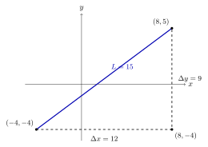
Figure. The line segment is the hypotenuse of a \(12\)–\(9\)–\(15\) right triangle.
Curves whose integral we can do¶
Most arc length integrals cannot be evaluated by the methods of Calculus I, because of the square root. Two situations do work: after a substitution the integrand becomes a power, or \(1+f'^2\) turns out to be a perfect square.
Example 6.5.9: A power curve: a substitution
Find the length of \(y=x^{3/2}\) for \(1\le x\le5\).
Solution. Derivative. \(f'(x)=\frac32x^{1/2}\), continuous on \([1,5]\), and \(f'(x)^2=\frac94x\).
Integrand. \(1+f'(x)^2=1+\frac94x=\frac{4+9x}4\), so \(\sqrt{1+f'(x)^2}=\frac12\sqrt{4+9x}\).
Substitution. By Theorem 6.5.4, \(L=\frac12\int_1^5\sqrt{4+9x}\,dx\). Let \(u=4+9x\), so \(du=9\,dx\); when \(x=1\), \(u=13\), and when \(x=5\), \(u=49\). Then
Check. The chord from \((1,1)\) to \((5,5\sqrt5)\approx(5,11.18)\) has length \(\sqrt{16+10.18^2}\approx10.94\), a little less than \(L\approx10.97\), as it must be (Theorem 6.5.2(1)); the curve is nearly straight.
Answer. \(L=\dfrac{343-13\sqrt{13}}{27}\approx10.97\).
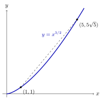
Figure. The curve \(y=x^{3/2}\) and its chord (dashed) from \((1,1)\) to \((5,5\sqrt5)\).
Example 6.5.10: A perfect square with a power
Find the length of \(y=\dfrac{x^3}3+\dfrac1{4x}\) for \(1\le x\le2\).
Solution. Derivative. Write \(y=\frac13x^3+\frac14x^{-1}\). Then \(f'(x)=x^2-\frac14x^{-2}=x^2-\frac1{4x^2}\), continuous on \([1,2]\).
A perfect square. Square the derivative: \(f'(x)^2=x^4-2\cdot x^2\cdot\frac1{4x^2}+\frac1{16x^4}=x^4-\frac12+\frac1{16x^4}\). Adding \(1\) turns the middle term \(-\frac12\) into \(+\frac12\):
because \(2\cdot x^2\cdot\frac1{4x^2}=\frac12\). For \(x>0\) the number \(x^2+\frac1{4x^2}\) is positive, so \(\sqrt{1+f'(x)^2}=x^2+\frac1{4x^2}\).
Integral. By Theorem 6.5.4,
Check. The endpoints are \((1,\frac7{12})\) and \((2,\frac{67}{24})\), and the chord has length \(\sqrt{1+(\frac{53}{24})^2}\approx2.424\), less than \(L\approx2.458\).
Answer. \(L=\dfrac{59}{24}\approx2.458\).
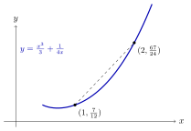
Figure. The curve of Example 6.5.10 between \(x=1\) and \(x=2\), with its chord.
Example 6.5.11: A perfect square with a logarithm
Find the length of \(y=\dfrac{x^2}4-\dfrac{\ln x}2\) for \(1\le x\le e\).
Solution. Derivative. \(f'(x)=\frac x2-\frac1{2x}\), continuous on \([1,e]\) (the interval is in \(x>0\)).
A perfect square. \(f'(x)^2=\frac{x^2}4-2\cdot\frac x2\cdot\frac1{2x}+\frac1{4x^2}=\frac{x^2}4-\frac12+\frac1{4x^2}\), so
Integral. Here \(\int\frac1{2x}\,dx=\frac12\ln x\) (Calculus I, \(x>0\)), so
Check. The endpoints are \((1,\frac14)\) and \((e,\frac{e^2}4-\frac12)\approx(2.718,1.347)\); the chord has length \(\approx2.039<L\).
Answer. \(L=\dfrac{e^2+1}4\approx2.097\).
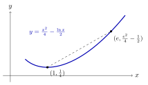
Figure. The curve of Example 6.5.11 for \(1\le x\le e\) and its chord.
Example 6.5.12: A perfect square with exponentials
Find the length of \(y=e^x+\dfrac{e^{-x}}4\) for \(0\le x\le\ln3\).
Solution. Derivative. \(f'(x)=e^x-\frac14e^{-x}\).
A perfect square. \(f'(x)^2=e^{2x}-2\cdot e^x\cdot\frac14e^{-x}+\frac1{16}e^{-2x}=e^{2x}-\frac12+\frac1{16}e^{-2x}\), using \(e^xe^{-x}=1\). Then
which is positive for every \(x\).
Integral. \(\int e^{-x}\,dx=-e^{-x}\), so, with \(e^{\ln3}=3\) and \(e^{-\ln3}=\frac13\),
Check. The endpoints are \((0,\frac54)\) and \((\ln3,\frac{37}{12})\approx(1.099,3.083)\), and the chord has length \(\approx2.137<L\).
Answer. \(L=\dfrac{13}6\approx2.167\).
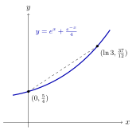
Figure. The curve of Example 6.5.12 for \(0\le x\le\ln3\) and its chord.
The perfect squares are not luck. If \(f'=A-B\) with \(4AB=1\) (both \(x^2\) and \(\frac1{4x^2}\) above have product \(\frac14\)), then \(1+f'^2=(A+B)^2\). This gives a family of curves with closed-form lengths, and the bank contains more of them.
Vertical tangents: switch the variable¶
Theorem 6.5.4 needs \(f'\) continuous on the closed interval. If the graph has a vertical tangent at an endpoint, \(f'\) is not defined there, but Theorem 6.5.6 lets us describe the curve with \(y\) as the variable.
Example 6.5.13: A cusp at the origin
Find the length of the curve \(y=x^{2/3}\) for \(0\le x\le1\).
Solution. Why not \(x\). \(f'(x)=\frac23x^{-1/3}\) is not defined at \(x=0\) and grows without bound as \(x\to0^+\): the graph has a vertical tangent (a cusp) at the origin, so Theorem 6.5.4 does not apply on \([0,1]\).
Describe the curve with \(y\) as the variable. For \(x\ge0\), \(y=x^{2/3}\) means \(x=y^{3/2}\), and \(x\) from \(0\) to \(1\) corresponds to \(y\) from \(0\) to \(1\). So the curve is \(x=g(y)=y^{3/2}\), \(0\le y\le1\), and \(g'(y)=\frac32y^{1/2}\) is continuous on \([0,1]\). By Theorem 6.5.6 the length is
Substitution. Let \(u=4+9y\), \(du=9\,dy\); \(y=0\) gives \(u=4\) and \(y=1\) gives \(u=13\). Then
Check. The chord from \((0,0)\) to \((1,1)\) is \(\sqrt2\approx1.414<L\).
Answer. \(L=\dfrac{13\sqrt{13}-8}{27}\approx1.440\). (The integral in \(x\), \(\int_0^1\sqrt{1+\frac4{9x^{2/3}}}\,dx\), is improper at \(0\); improper integrals are studied in a later chapter, and it has this same value.)
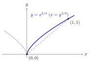
Figure. The curve \(y=x^{2/3}\) has a vertical tangent (a cusp) at the origin. The right branch is also the curve \(x=y^{3/2}\).
Example 6.5.14: Ingenuity: an inverse function
Find the length of \(y=\dfrac12\ln\bigl(2x+\sqrt{4x^2-1}\bigr)\) for \(\frac12\le x\le\frac{17}{16}\).
Solution. The tangent at the left end. Put \(s=\sqrt{4x^2-1}\), so \(s'=\frac{4x}s\). Then
which is not defined at \(x=\frac12\) (where \(s=0\)): the tangent is vertical there. We therefore solve for \(x\).
Solve for \(x\). From \(y=\frac12\ln(2x+s)\): \(e^{2y}=2x+s\), so \(e^{2y}-2x=s\). Squaring, \(e^{4y}-4xe^{2y}+4x^2=4x^2-1\), hence \(e^{4y}+1=4xe^{2y}\) and
Limits. At \(x=\frac12\), \(s=0\) and \(y=\frac12\ln1=0\). At \(x=\frac{17}{16}\), \(s=\sqrt{\frac{289}{64}-1}=\frac{15}8\), \(2x+s=\frac{17}8+\frac{15}8=4\) and \(y=\frac12\ln4=\ln2\). So \(0\le y\le\ln2\).
A perfect square. \(g'(y)=\frac{e^{2y}-e^{-2y}}2\) and \(g'(y)^2=\frac{e^{4y}-2+e^{-4y}}4\), so
Integral. By Theorem 6.5.6, with \(e^{2\ln2}=4\),
Check. The endpoints are \((\frac12,0)\) and \((\frac{17}{16},\ln2)\), with chord \(\sqrt{(\frac9{16})^2+(\ln2)^2}\approx0.893<\frac{15}{16}\). (In the variable \(x\) the integral is \(\int_{1/2}^{17/16}\frac{2x}{\sqrt{4x^2-1}}\,dx=\bigl[\frac12\sqrt{4x^2-1}\bigr]_{1/2}^{17/16}\), an improper integral at \(\frac12\) with the same value \(\frac{15}{16}\).)
Answer. \(L=\dfrac{15}{16}\).
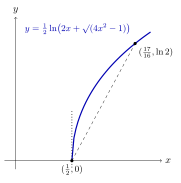
Figure. The curve of Example 6.5.14. The dotted line marks the vertical tangent at \((\frac12,0)\).
Bounds for the length¶
Even when we cannot evaluate the integral, we can say how large \(L\) is. The chord is a lower bound by Theorem 6.5.2(1); the next theorem adds the others. Because it compares integrands, it also compares the lengths of different curves.
Theorem 6.5.15: Bounds for the length
Let \(f'\) be continuous on \([a,b]\), let \(L\) be the length of the graph, and let \(D=\sqrt{(b-a)^2+(f(b)-f(a))^2}\) be the length of the chord.
(1) \(D\le L\).
(2) \(\max\Bigl\{\,b-a,\ \displaystyle\int_a^b\abs{f'(x)}\,dx\Bigr\}\le L\le(b-a)+\displaystyle\int_a^b\abs{f'(x)}\,dx\), and \(\displaystyle\int_a^b\abs{f'}\ge\abs{f(b)-f(a)}\).
(3) If \(\abs{f'(x)}\le M\) for all \(x\) in \([a,b]\), then \(L\le(b-a)\sqrt{1+M^2}\).
(4) If \(g'\) is continuous on \([a,b]\) and \(\abs{f'(x)}\le\abs{g'(x)}\) for all \(x\), then the length of the graph of \(f\) is at most the length of the graph of \(g\) over \([a,b]\).
(5) If \(f\) is increasing or decreasing, then \(D\le L\le(b-a)+\abs{f(b)-f(a)}\): the curve is no shorter than the chord and no longer than the two legs of the right triangle on the chord.
Proof. (1) is Theorem 6.5.2(1). For (2), let \(s\) be any real number. Then \(1\le\sqrt{1+s^2}\), and \(\abs s=\sqrt{s^2}\le\sqrt{1+s^2}\le1+\abs s\), because \((1+\abs s)^2=1+2\abs s+s^2\ge1+s^2\). Put \(s=f'(x)\) and integrate over \([a,b]\) (the integral preserves inequalities): \(b-a\le L\), \(\int_a^b\abs{f'}\le L\) and \(L\le(b-a)+\int_a^b\abs{f'}\). Finally \(\int_a^b\abs{f'}\ge\abs{\int_a^bf'}=\abs{f(b)-f(a)}\) by Theorem 6.1.6 and the Fundamental Theorem. (3) \(1+f'(x)^2\le1+M^2\), so \(\sqrt{1+f'^2}\le\sqrt{1+M^2}\); integrate. (4) \(f'^2\le g'^2\) gives \(\sqrt{1+f'^2}\le\sqrt{1+g'^2}\); integrate. (5) If \(f\) is monotone, \(f'\) does not change sign, so \(\abs{\int_a^bf'}=\int_a^b\abs{f'}\) (the equality case of Theorem 6.1.6), that is, \(\int_a^b\abs{f'}=\abs{f(b)-f(a)}\); now use (1) and (2). (For \(y=x^2\) on \([0,1]\): \(D=\sqrt2\), \(b-a=1\), \(\int_0^1\abs{2x}\,dx=1\), and \(M=2\), so \(\sqrt2\le L\le2\) and also \(L\le\sqrt5\).) ◻ ∎
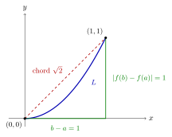
Figure. For \(y=x^2\) on \([0,1]\) the length \(L\) lies between the chord \(\sqrt2\) and the two legs \(1+1=2\).
Pause and think 6.5.3: Why an eighth of a circle?
The semicircle \(y=\sqrt{a^2-x^2}\) for \(-a\le x\le a\) looks like the natural curve to use for the circumference. Why does Theorem 6.5.4 not apply to it directly? How does cutting the circle into eight equal arcs avoid the difficulty?
Answer and discussion
For \(f(x)=\sqrt{a^2-x^2}\) we have \(f'(x)=-x/\sqrt{a^2-x^2}\), which is not defined at \(x=\pm a\) (the tangent is vertical there), so \(f'\) is not continuous on the closed interval \([-a,a]\) and Theorem 6.5.4 does not apply; the integral is improper at both ends. On \([0,a/\sqrt2]\) the quantity \(a^2-x^2\) is at least \(a^2/2\), so \(f'\) is continuous and bounded, and the theorem applies. Eight such arcs, related by rotations and reflections, make up the circle. (The proof of Theorem 6.5.16 also treats the semicircle directly, as a limit.)
The circumference of a circle¶
The circle gives a check on the whole theory: its length should be \(2\pi a\).
Theorem 6.5.16: The circumference of a circle
The arc of the circle \(x^2+y^2=a^2\) (\(a>0\)) over \(0\le x\le a/\sqrt2\) has length \(\pi a/4\), and the circle has length (circumference) \(2\pi a\). The upper half circle \(y=\sqrt{a^2-x^2}\) over \([-a,a]\) has length \(\pi a\), which is the limit of the lengths \(2a\arcsin(b/a)\) of the parts over \([-b,b]\) as \(b\to a^-\).
Proof. One eighth. Let \(f(x)=\sqrt{a^2-x^2}\) on \([0,a/\sqrt2]\). There \(a^2-x^2\ge a^2/2>0\), so \(f'(x)=-\dfrac x{\sqrt{a^2-x^2}}\) is continuous. Then \(1+f'(x)^2=1+\dfrac{x^2}{a^2-x^2}=\dfrac{a^2}{a^2-x^2}\) and \(\sqrt{1+f'(x)^2}=\dfrac a{\sqrt{a^2-x^2}}\) (\(a>0\)). From Calculus I, \(\frac d{dx}\arcsin\frac xa=\frac1{\sqrt{a^2-x^2}}\), so
because \(\sin\frac\pi4=\frac1{\sqrt2}\) and \(\frac\pi4\) lies in \([-\frac\pi2,\frac\pi2]\).
The whole circle. The eight points of the circle at the angles \(0,\frac\pi4,\dots,\frac{7\pi}4\) cut it into eight arcs. The first arc, from the angle \(\frac\pi4\) to \(\frac\pi2\), is the one above. Each of the other seven is its image under a rotation about the origin through a multiple of \(\frac\pi4\), a rigid motion, so by Theorem 6.5.2(3) each has length \(\frac{\pi a}4\); by additivity, Theorem 6.5.2(2), applied seven times, the circle has length \(8\cdot\frac{\pi a}4=2\pi a\).
The semicircle. For \(0<b<a\) the part of the semicircle over \([-b,b]\) is the graph of \(f\) with \(f'\) continuous, and its length is \(\int_{-b}^ba/\sqrt{a^2-x^2}\,dx=2a\arcsin\frac ba\). The rest of the semicircle consists of two end arcs, mirror images of each other. The right one is the curve \(x=g(y)=\sqrt{a^2-y^2}\) for \(0\le y\le\eta=\sqrt{a^2-b^2}<a\), where \(g'\) is continuous, and by Theorem 6.5.15(2) its length is at most \(\eta+\int_0^\eta\abs{g'}=\eta+(g(0)-g(\eta))=\eta+(a-b)\), because \(g\) decreases from \(a\) to \(b\). As \(b\to a^-\), both \(\eta\to0\) and \(a-b\to0\), so the end arcs have lengths tending to \(0\) while \(2a\arcsin\frac ba\to2a\cdot\frac\pi2=\pi a\). By additivity the semicircle has length \(\pi a\). (For \(a=1\): \(\arcsin\frac1{\sqrt2}=\frac\pi4\) and \(8\cdot\frac\pi4=2\pi\).) ◻ ∎
The integral \(\int_{-a}^a\frac a{\sqrt{a^2-x^2}}\,dx\) is an improper integral (the integrand is unbounded at both ends), a topic of a later chapter; the proof above has found its value directly.
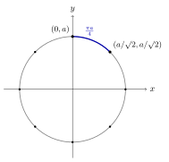
Figure. The eight points that cut the circle (here \(a=1\)) into eight equal arcs. The arc over \(0\le x\le a/\sqrt2\) is drawn thick; its length is \(\frac{\pi a}4\).
Example 6.5.17: An arc of a circle
Find the length of the curve \(y=\sqrt{36-x^2}\) for \(0\le x\le3\), and check it with geometry.
Solution. Derivative. \(f'(x)=-\dfrac x{\sqrt{36-x^2}}\), continuous on \([0,3]\), because \(36-x^2\ge27>0\) there.
Integrand. \(1+f'(x)^2=1+\dfrac{x^2}{36-x^2}=\dfrac{36}{36-x^2}\), so \(\sqrt{1+f'(x)^2}=\dfrac6{\sqrt{36-x^2}}\).
Integral. Since \(\frac d{dx}\bigl(6\arcsin\frac x6\bigr)=\frac6{6\sqrt{1-x^2/36}}=\frac6{\sqrt{36-x^2}}\) (Calculus I),
Check by geometry. The circle has radius \(6\). The end points are \((0,6)\) and \((3,3\sqrt3)\) (because \(36-9=27\)), and \(\sin\theta=\frac36=\frac12\) for the angle \(\theta=\frac\pi6\) between them, so the arc has length \(r\theta=6\cdot\frac\pi6=\pi\). The chord is \(\sqrt{9+(6-3\sqrt3)^2}\approx3.106<\pi\).
Answer. \(L=\pi\).
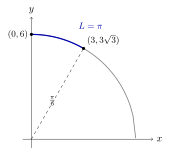
Figure. The arc of the circle of radius \(6\) between \((0,6)\) and \((3,3\sqrt3)\), which subtends the angle \(\frac\pi6\) at the origin.
Integrals we cannot do yet¶
Even simple curves, such as \(y=x^2\) or \(y=\sin x\), lead to a square root whose antiderivative cannot be found with substitution and the other methods of Calculus I (a method that handles \(\sqrt{1+4x^2}\) comes in a later chapter). This is typical of arc length. The integral is still a definite integral of a continuous function, so it has a value, which numerical integration (a later section) gives to as many digits as we like. We then check the value against Theorem 6.5.15: it must lie above the chord and above every inscribed polygon.
Example 6.5.18: Set up, evaluate numerically, check
Write the integral for the length of (a) \(y=x^2\) for \(0\le x\le1\) and (b) \(y=\sin x\) for \(0\le x\le\pi\). Give a numerical value of each and check it.
Solution. (a) \(f'(x)=2x\) is continuous, so \(L=\int_0^1\sqrt{1+4x^2}\,dx\). Numerical integration gives \(L\approx1.4789\).
Checks. The chord from \((0,0)\) to \((1,1)\) has length \(\sqrt2\approx1.4142<L\). The polygon with the five vertices at \(x=0,\frac14,\frac12,\frac34,1\) has segments of lengths \(\frac{\sqrt{17}}{16}\), \(\frac5{16}\), \(\frac{\sqrt{41}}{16}\), \(\frac{\sqrt{65}}{16}\) (for instance the second one joins \((\frac14,\frac1{16})\) to \((\frac12,\frac14)\), with \(\Delta x=\frac14\) and \(\Delta y=\frac3{16}\), and \(\sqrt{\frac1{16}+\frac9{256}}=\frac5{16}\)), so its length is \(\frac{\sqrt{17}+5+\sqrt{41}+\sqrt{65}}{16}\approx1.4743<L\); more vertices have given a number closer to \(L\), as Theorem 6.5.4 predicts. Finally Theorem 6.5.15 gives \(L\le1+\int_0^12x\,dx=2\).
(b) \(f'(x)=\cos x\), so \(L=\int_0^\pi\sqrt{1+\cos^2x}\,dx\approx3.8202\). The chord joins \((0,0)\) to \((\pi,0)\) and has length \(\pi\approx3.1416\). The polygon with vertices at \(x=0,\frac\pi4,\frac\pi2,\frac{3\pi}4,\pi\) (heights \(0,\frac{\sqrt2}2,1,\frac{\sqrt2}2,0\)) has length \(2\Bigl(\sqrt{\frac{\pi^2}{16}+\frac12}+\sqrt{\frac{\pi^2}{16}+\bigl(1-\frac{\sqrt2}2\bigr)^2}\Bigr)\approx3.7901<L\). By Theorem 6.5.15, \(L\le\pi+\int_0^\pi\abs{\cos x}\,dx=\pi+2\approx5.14\).
Answer. (a) \(\approx1.4789\); (b) \(\approx3.8202\).
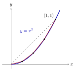
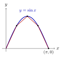
Figure. Left: \(y=x^2\) with its chord (dashed) and the polygon with four segments. Right: \(y=\sin x\) on \([0,\pi]\) with a polygon with four segments; its chord lies on the \(x\)-axis.
Example 6.5.19: Cosine against a parabola
Which of the curves \(y=1-x^2\) and \(y=\cos\frac{\pi x}2\) has the greater length on \([-1,1]\)?
Solution. Set-up. Both pass through \((-1,0)\), \((0,1)\) and \((1,0)\) and are even functions. The reflection in the \(y\)-axis is a rigid motion that carries the part over \([-1,0]\) onto the part over \([0,1]\), so by Theorem 6.5.2(2), (3) each length is twice the length over \([0,1]\). With \(f'(x)=-2x\) for the parabola and \(g'(x)=-\frac\pi2\sin\frac{\pi x}2\) for the cosine,
Slopes do not decide. At \(x=\frac12\) the cosine is steeper (\(\frac\pi2\sin\frac\pi4\approx1.11\) against \(1\)), at \(x=1\) the parabola is (\(2\) against \(\frac\pi2\)), so Theorem 6.5.15(4) cannot be used. Both lengths lie between the chord \(2\) and \((b-a)+\int\abs{f'}=2+2=4\).
Numerical values. Numerical integration gives \(L_{\text{parabola}}\approx2.9579\) (twice the value of Example 6.5.18(a)) and \(L_{\text{cosine}}\approx2.9274\). The parabola is longer, by about \(0.03\).
Check. With the five vertices at \(x=-1,-\frac12,0,\frac12,1\) the parabola (heights \(0,\frac34,1,\frac34,0\)) has a polygon of length \(\frac{\sqrt{13}+\sqrt5}2\approx2.9208\), and the cosine (heights \(0,\frac{\sqrt2}2,1,\frac{\sqrt2}2,0\)) has one of length \(\sqrt3+2\sqrt{\frac14+\bigl(1-\frac{\sqrt2}2\bigr)^2}\approx2.8910\). Each is below the corresponding length and above the chord \(2\), and the polygon lengths show the same order as the lengths.
Answer. The parabola \(y=1-x^2\) is longer (\(\approx2.958\) against \(\approx2.927\)). This order is established numerically; with the methods of this course we cannot prove it by comparing integrands.
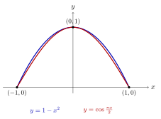
Figure. The parabola (blue) and the cosine (red) between the same three points. The two curves cross only at these points.
Looking ahead¶
The idea of cutting a curve into short pieces, taking the length of each and adding is used again for curves given by \(x=f(t)\), \(y=g(t)\) and for polar curves (a later chapter), where the integrand becomes the speed of a moving point. A later section of this chapter rotates an arc about an axis to find the area of a surface, with the same square root in the integrand. In a later course, curves in space have a length given by an integral of the speed.
Example bank¶
What’s in this bank. Fourteen further worked examples, grouped by problem type and ordered from easiest to hardest within each group.
-
Lines and set-up (Examples 6.5.20–6.5.21): a line given as \(x=g(y)\), checked by the distance formula; writing and simplifying arc length integrals without evaluating them.
-
Perfect squares: powers (Examples 6.5.22–6.5.23): \(y=\frac{x^4}{16}+\frac1{2x^2}\); a curve with fractional powers.
-
Perfect squares: exponentials (Examples 6.5.24–6.5.25): the curve \(y=e^{x/2}+e^{-x/2}\) (a hanging chain); an exponential curve \(x=g(y)\).
-
Substitution and cusps (Examples 6.5.26–6.5.27): a shifted power curve; a cusp inside the interval, handled by additivity.
-
Numerical values and bounds (Examples 6.5.28–6.5.29): a square-root curve and the reflection of a parabola; a suspension cable.
-
Comparing and recovering curves (Examples 6.5.30–6.5.31): which functions have a given arc length; which of two curves is longer from their slopes alone.
-
Proofs (Examples 6.5.32–6.5.33): a reflected graph has the same length; the length of a stretched graph.
Group 1: Lines and set-up¶
Example 6.5.20: A line given as \(x=g(y)\)
Find the length of the line \(x=\frac23y+1\) for \(0\le y\le9\) with the formula of Theorem 6.5.5, and check it with the distance formula.
Solution. Here \(g'(y)=\frac23\), so \(1+g'(y)^2=1+\frac49=\frac{13}9\) and \(\sqrt{1+g'(y)^2}=\frac{\sqrt{13}}3\). Therefore
Check. The endpoints are \((1,0)\) and \((7,9)\) (put \(y=0\) and \(y=9\)), so \(\Delta x=6\), \(\Delta y=9\) and the distance is \(\sqrt{36+81}=\sqrt{117}=3\sqrt{13}\).
Answer. \(L=3\sqrt{13}\).
Example 6.5.21: Set up and simplify
Write, simplify and do not evaluate the integral for the length of (a) \(y=x^3-2x\) for \(-1\le x\le2\); (b) \(y=4\sin\frac x2\) for \(0\le x\le2\pi\); (c) \(x=\ln y\) for \(1\le y\le e\).
Solution. In each case we find the derivative, check that it is continuous on the interval, and simplify \(1+(\text{derivative})^2\).
(a) \(f'(x)=3x^2-2\). Then \(1+f'(x)^2=1+9x^4-12x^2+4=9x^4-12x^2+5\), and \(L=\int_{-1}^2\sqrt{9x^4-12x^2+5}\,dx\).
(b) \(f'(x)=4\cdot\frac12\cos\frac x2=2\cos\frac x2\) (Chain Rule), so \(1+f'(x)^2=1+4\cos^2\frac x2\) and \(L=\int_0^{2\pi}\sqrt{1+4\cos^2\frac x2}\,dx\).
(c) Here \(x=g(y)=\ln y\) and \(g'(y)=\frac1y\), continuous on \([1,e]\). Then \(1+g'(y)^2=1+\frac1{y^2}=\frac{y^2+1}{y^2}\), and since \(y>0\), \(\sqrt{1+g'(y)^2}=\frac{\sqrt{y^2+1}}y\). So \(L=\int_1^e\frac{\sqrt{y^2+1}}y\,dy\) (a method for it comes in a later chapter).
Answer. (a) \(\int_{-1}^2\sqrt{9x^4-12x^2+5}\,dx\); (b) \(\int_0^{2\pi}\sqrt{1+4\cos^2\frac x2}\,dx\); (c) \(\int_1^e\frac{\sqrt{y^2+1}}y\,dy\).
Group 2: Perfect squares with powers¶
Example 6.5.22: Fourth and inverse square
Find the length of \(y=\dfrac{x^4}{16}+\dfrac1{2x^2}\) for \(1\le x\le2\).
Solution. Derivative. \(y=\frac1{16}x^4+\frac12x^{-2}\), so \(f'(x)=\frac{x^3}4-x^{-3}=\frac{x^3}4-\frac1{x^3}\).
Perfect square. \(f'(x)^2=\frac{x^6}{16}-2\cdot\frac{x^3}4\cdot\frac1{x^3}+\frac1{x^6}=\frac{x^6}{16}-\frac12+\frac1{x^6}\), so \(1+f'(x)^2=\frac{x^6}{16}+\frac12+\frac1{x^6}=\Bigl(\frac{x^3}4+\frac1{x^3}\Bigr)^2\), and for \(x>0\), \(\sqrt{1+f'(x)^2}=\frac{x^3}4+\frac1{x^3}\).
Integral.
Check. The endpoints are \((1,\frac9{16})\) and \((2,\frac98)\); the chord has length \(\sqrt{1+(\frac9{16})^2}\approx1.147<\frac{21}{16}=1.3125\).
Answer. \(L=\frac{21}{16}\).
Example 6.5.23: Fractional powers
Find the length of \(y=\dfrac38x^{4/3}-\dfrac34x^{2/3}\) for \(1\le x\le8\).
Solution. Derivative. \(f'(x)=\frac38\cdot\frac43x^{1/3}-\frac34\cdot\frac23x^{-1/3}=\frac12x^{1/3}-\frac12x^{-1/3}\), continuous on \([1,8]\).
Perfect square. \(f'(x)^2=\frac14x^{2/3}-2\cdot\frac12x^{1/3}\cdot\frac12x^{-1/3}+\frac14x^{-2/3}=\frac14x^{2/3}-\frac12+\frac14x^{-2/3}\) (as \(x^{1/3}x^{-1/3}=1\)). So \(1+f'(x)^2=\frac14x^{2/3}+\frac12+\frac14x^{-2/3}=\Bigl(\frac12x^{1/3}+\frac12x^{-1/3}\Bigr)^2\), and \(\sqrt{1+f'(x)^2}=\frac12\bigl(x^{1/3}+x^{-1/3}\bigr)\).
Integral. \(\int x^{1/3}dx=\frac34x^{4/3}\) and \(\int x^{-1/3}dx=\frac32x^{2/3}\), so
Check. The endpoints are \((1,-\frac38)\) and \((8,3)\); the chord has length \(\sqrt{49+(\frac{27}8)^2}\approx7.771<7.875=\frac{63}8\).
Answer. \(L=\frac{63}8\).
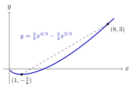
Figure. The curve of Example 6.5.23 and its chord.
Group 3: Perfect squares with exponentials¶
Example 6.5.24: A hanging chain
Find the length of \(y=e^{x/2}+e^{-x/2}\) for \(0\le x\le2\).
Solution. Derivative. \(f'(x)=\frac12e^{x/2}-\frac12e^{-x/2}=\frac{e^{x/2}-e^{-x/2}}2\).
Perfect square. \(f'(x)^2=\frac{e^x-2+e^{-x}}4\) (using \(e^{x/2}e^{-x/2}=1\)), so \(1+f'(x)^2=\frac{e^x+2+e^{-x}}4=\Bigl(\frac{e^{x/2}+e^{-x/2}}2\Bigr)^2\) and \(\sqrt{1+f'(x)^2}=\frac{e^{x/2}+e^{-x/2}}2>0\).
Integral. \(\int\frac{e^{x/2}}2dx=e^{x/2}\) and \(\int\frac{e^{-x/2}}2dx=-e^{-x/2}\), so
Check. The endpoints are \((0,2)\) and \((2,e+\frac1e)\approx(2,3.086)\); the chord has length \(\approx2.276<L\).
Answer. \(L=e-\frac1e\).
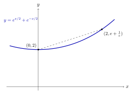
Figure. The chain-like curve of Example 6.5.24 for \(0\le x\le2\).
Example 6.5.25: An exponential in the variable \(y\)
Find the length of the curve \(x=e^{2y}+\dfrac{e^{-2y}}{16}\) for \(0\le y\le\frac12\ln2\).
Solution. Derivative. \(g'(y)=2e^{2y}-\frac18e^{-2y}\).
Perfect square. \(g'(y)^2=4e^{4y}-2\cdot2\cdot\frac18+\frac1{64}e^{-4y}=4e^{4y}-\frac12+\frac1{64}e^{-4y}\), so \(1+g'(y)^2=4e^{4y}+\frac12+\frac1{64}e^{-4y}=\Bigl(2e^{2y}+\frac18e^{-2y}\Bigr)^2\) and \(\sqrt{1+g'(y)^2}=2e^{2y}+\frac18e^{-2y}\).
Integral. By Theorem 6.5.5, using \(e^{2\cdot\frac12\ln2}=e^{\ln2}=2\),
Check. The endpoints are \((\frac{17}{16},0)\) and \((\frac{65}{32},\frac12\ln2)\); the chord has length \(\approx1.0289<\frac{33}{32}=1.03125\).
Answer. \(L=\frac{33}{32}\).
Group 4: Substitution and cusps¶
Example 6.5.26: A shifted power curve
Find the length of \(y=\dfrac23(x-1)^{3/2}\) for \(1\le x\le10\).
Solution. Derivative. \(f'(x)=\frac23\cdot\frac32(x-1)^{1/2}=\sqrt{x-1}\), continuous on \([1,10]\), and \(f'(x)^2=x-1\).
Integrand. \(1+f'(x)^2=1+(x-1)=x\), so \(\sqrt{1+f'(x)^2}=\sqrt x\).
Integral. \(L=\int_1^{10}x^{1/2}\,dx=\frac23\Bigl[x^{3/2}\Bigr]_1^{10}=\frac23\bigl(10\sqrt{10}-1\bigr)\approx20.42\). Check. The endpoints are \((1,0)\) and \((10,18)\) (since \(9^{3/2}=27\)), and the chord is \(\sqrt{81+324}=\sqrt{405}\approx20.12<L\).
Answer. \(L=\frac23\bigl(10\sqrt{10}-1\bigr)\approx20.42\).
Example 6.5.27: A cusp inside the interval
Find the length of \(y=x^{2/3}\) for \(-1\le x\le8\).
Solution. Why we split. \(f'(x)=\frac23x^{-1/3}\) does not exist at \(x=0\), which is inside the interval, and the graph has a cusp there. By additivity (Theorem 6.5.2(2)) we add the lengths over \([-1,0]\) and \([0,8]\).
The part over \([-1,0]\). Since \((-x)^{2/3}=x^{2/3}\), the function is even, so the reflection in the \(y\)-axis (a rigid motion, Theorem 6.5.2(3)) carries this part onto the part over \([0,1]\), whose length is \(\frac{13\sqrt{13}-8}{27}\) by Example 6.5.13.
The part over \([0,8]\). As in Example 6.5.13 the curve is \(x=y^{3/2}\) for \(0\le y\le4\) (\(8^{2/3}=4\)), so \(L_2=\frac12\int_0^4\sqrt{4+9y}\,dy\). With \(u=4+9y\) (\(du=9\,dy\); \(u=4\) to \(u=40\)),
since \(40^{3/2}=40\sqrt{40}=80\sqrt{10}\).
Total. \(L=\dfrac{13\sqrt{13}-8}{27}+\dfrac{80\sqrt{10}-8}{27}=\dfrac{13\sqrt{13}+80\sqrt{10}-16}{27}\approx10.513\). Check. The chord from \((-1,1)\) to \((8,4)\) is \(\sqrt{81+9}\approx9.487<L\).
Answer. \(L=\dfrac{13\sqrt{13}+80\sqrt{10}-16}{27}\approx10.513\).
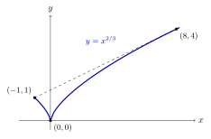
Figure. The curve \(y=x^{2/3}\) over \([-1,8]\) has a cusp at the origin, where the length is split.
Group 5: Numerical values and bounds¶
Example 6.5.28: A square root is a sideways parabola
Find the length of \(y=\sqrt x\) for \(0\le x\le1\).
Solution. Why not \(x\). \(f'(x)=\frac1{2\sqrt x}\) is not defined at \(0\) (the tangent there is vertical). So we write \(x=y^2\) for \(0\le y\le1\), with \(g'(y)=2y\) continuous.
Integral. By Theorem 6.5.6, \(L=\int_0^1\sqrt{1+4y^2}\,dy\). This is exactly the integral of Example 6.5.18(a), with the letter \(y\) in place of \(x\), and no method of Calculus I evaluates it; its numerical value is \(\approx1.4789\). The explanation is geometric: reflection in the line \(y=x\) carries the parabola \(y=x^2\) onto \(y=\sqrt x\) (for \(x\ge0\)) and keeps lengths (Theorem 6.5.2(3)). Check. The polygon with vertices \((0,0)\), \((\frac14,\frac12)\), \((1,1)\) has segments \(\sqrt{\frac1{16}+\frac14}=\frac{\sqrt5}4\) and \(\sqrt{\frac9{16}+\frac14}=\frac{\sqrt{13}}4\), total \(\approx1.4604\), below \(1.4789\) and above the chord \(\sqrt2\).
Answer. \(L\approx1.4789\), the same as for \(y=x^2\) on \([0,1]\).
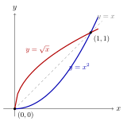
Figure. The two curves are mirror images in the line \(y=x\), so they have the same length.
Example 6.5.29: A suspension cable
The cable of a footbridge hangs between two towers \(800\) m apart in the shape \(y=\dfrac{x^2}{1600}\) for \(-400\le x\le400\) (\(x\) and \(y\) in metres). Find the length of the cable (numerically) and check it.
Solution. Set-up. \(f'(x)=\frac x{800}\), so \(L=\int_{-400}^{400}\sqrt{1+\frac{x^2}{640000}}\,dx\), an integral that we cannot do yet. The numerical value is \(L\approx832.18\) m. (By symmetry, Theorem 6.5.2(2)–(3), \(L=2\int_0^{400}\), with the same value.)
Checks. The tops of the towers are at height \(y=\frac{400^2}{1600}=100\), so the chord is horizontal and has length \(800\). The polygon with vertices at \(x=-400,-200,0,200,400\) (heights \(100,25,0,25,100\)) has two segments of length \(\sqrt{200^2+75^2}\approx213.60\) and two of length \(\sqrt{200^2+25^2}\approx201.56\), total \(\approx830.31\). For the upper bound, \(\abs{f'}\le\frac{400}{800}=\frac12\), so by Theorem 6.5.15(3) \(L\le800\sqrt{1+\frac14}=400\sqrt5\approx894.4\). So \(830.3\le832.2\le894.4\).
Answer. \(L\approx832.2\) m.
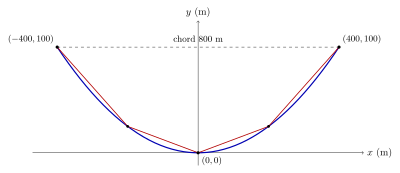
Figure. The cable (vertical scale exaggerated), the polygon with four segments (red) and the chord between the tower tops (dashed).
Group 6: Comparing and recovering curves¶
Example 6.5.30: Which functions have this arc length?
(a) Find a function whose graph over \([0,2]\) has length \(\int_0^2\sqrt{1+25x^6}\,dx\). (b) Find a function whose graph passes through \((1,2)\) and has length \(\int_1^4\sqrt{1+\frac4x}\,dx\) over \([1,4]\).
Solution. By Theorem 6.5.4 the length is \(\int\sqrt{1+f'^2}\), so we match \(f'(x)^2\) with the term added to \(1\) and then integrate \(f'\).
(a) \(f'(x)^2=25x^6\), so \(f'(x)=\pm5x^3\) and \(f(x)=\pm\frac54x^4+C\) for any constant \(C\). For instance \(f(x)=\frac54x^4\) (its derivative \(5x^3\) is continuous).
(b) \(f'(x)^2=\frac4x\), so \(f'(x)=\pm\frac2{\sqrt x}\) (continuous on \([1,4]\)) and \(f(x)=\pm4\sqrt x+C\). Passing through \((1,2)\): with \(+\), \(4+C=2\) gives \(C=-2\); with \(-\), \(-4+C=2\) gives \(C=6\). So \(f(x)=4\sqrt x-2\) or \(f(x)=6-4\sqrt x\) (mirror images of each other in the line \(y=2\)).
Answer. (a) \(\pm\frac54x^4+C\); (b) \(4\sqrt x-2\) or \(6-4\sqrt x\). The answer is never unique, because the length does not see a vertical shift or a reflection.
Example 6.5.31: Comparing from the slopes
Which curve is longer on \([0,1]\): \(y=e^x\) or \(y=1+x+\frac{x^2}2\)?
Solution. Let \(f(x)=e^x\) and \(g(x)=1+x+\frac{x^2}2\). Then \(f'(x)=e^x\) and \(g'(x)=1+x\). The function \(h(x)=e^x-1-x\) has \(h(0)=0\) and \(h'(x)=e^x-1\ge0\) for \(x\ge0\), so \(h\) is nondecreasing and \(h\ge0\) on \([0,1]\): \(e^x\ge1+x\). Both derivatives are positive, so \(\abs{g'(x)}=1+x\le e^x=\abs{f'(x)}\) for all \(x\) in \([0,1]\), and by Theorem 6.5.15(4) the graph of \(g\) is no longer than the graph of \(f\). The endpoints differ, \((1,e)\) and \((1,\frac52)\), so a comparison of chords would not decide it, but the slopes do. Numerically, \(L_g\approx1.8101\le L_f\approx2.0035\).
Answer. \(y=e^x\) is longer.
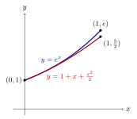
Figure. The two curves start together at \((0,1)\) and \(e^x\) stays above and is steeper.
Group 7: Proofs¶
Example 6.5.32: Proof: a reflected graph has the same length
Statement. Let \(f'\) be continuous on \([a,b]\) and let \(g(x)=f(-x)\) for \(-b\le x\le-a\). Then \(g\) and \(f\) have the same length.
Plan. Write both lengths with Theorem 6.5.4, differentiate \(g\) with the Chain Rule, and match the integrals with the substitution \(u=-x\).
Proof. By the Chain Rule \(g'(x)=-f'(-x)\), which is continuous on \([-b,-a]\), and \(g'(x)^2=f'(-x)^2\), the sign disappearing in the square. So
Let \(u=-x\), so \(du=-dx\); \(x=-b\) gives \(u=b\) and \(x=-a\) gives \(u=a\). Then
because reversing the limits changes the sign. (For \(f(x)=x^3\) on \([1,2]\) and \(g(x)=-x^3\) on \([-2,-1]\) both lengths are \(\int_1^2\sqrt{1+9u^4}\,du\approx7.0825\).) \(\blacksquare\)
A common mistake. Using \(g'(x)=f'(-x)\) and then worrying about a sign, or forgetting to reverse the limits after the substitution. The square removes the sign, and the reversed limits are repaired by \(-du\).
Consequence. If \(f\) is even on \([-a,a]\), the graph over \([-a,0]\) is the reflection of the graph over \([0,a]\), so \(L=2\int_0^a\sqrt{1+f'^2}\,dx\) (used in Example 6.5.19).
Example 6.5.33: Proof: the length of a stretched graph
Statement. Let \(f'\) be continuous on \([a,b]\) with length \(L\), and let \(c\ge1\). The graph of \(g(x)=f(cx)\) over \([a/c,b/c]\) has length \(L_c=\frac1c\int_a^b\sqrt{1+c^2f'(u)^2}\,du\) and
(For \(0<c\le1\) the inequalities are reversed: \(L\le L_c\le\frac Lc\).)
Plan. Differentiate, substitute \(u=cx\), and compare the integrands with \(\sqrt{1+f'^2}\).
Proof. By the Chain Rule \(g'(x)=c\,f'(cx)\), continuous on \([a/c,b/c]\), so \(L_c=\int_{a/c}^{b/c}\sqrt{1+c^2f'(cx)^2}\,dx\). Let \(u=cx\), \(dx=\frac1c\,du\); \(x=\frac ac\) gives \(u=a\) and \(x=\frac bc\) gives \(u=b\) (\(c>0\)). This gives the formula for \(L_c\). Now, for every real number \(s\) and \(c\ge1\): \(1+s^2\le1+c^2s^2\) and, because \(c^2\ge1\), \(1+c^2s^2\le c^2+c^2s^2=c^2(1+s^2)\). Taking square roots, \(\sqrt{1+s^2}\le\sqrt{1+c^2s^2}\le c\sqrt{1+s^2}\). Put \(s=f'(u)\), integrate over \([a,b]\) and multiply by \(\frac1c\): \(\frac1c\,L\le L_c\le\frac1c\cdot c\,L=L\). \(\blacksquare\)
Example. \(f(x)=x^2\) on \([0,1]\) has \(L\approx1.4789\); for \(c=2\), \(g(x)=4x^2\) on \([0,\frac12]\) has \(L_2=\int_0^{1/2}\sqrt{1+64x^2}\,dx\approx1.1617\), and indeed \(0.7395\le1.1617\le1.4789\).
A common mistake. Writing the length of \(y=f(cx)\) as \(\int_{a/c}^{b/c}\sqrt{1+f'(cx)^2}\,dx\), without the factor \(c^2\). By the same substitution that integral equals \(\frac Lc\), but it is not the length of \(y=f(cx)\), which needs \(g'(x)=c\,f'(cx)\).
Answers and discussion¶
Knowledge Check 6.5.1. The vertices are \((0,0)\), \((\frac12,\frac14)\) and \((1,1)\). The first segment has \(\Delta x=\frac12\), \(\Delta y=\frac14\) and length \(\sqrt{\frac14+\frac1{16}}=\frac{\sqrt5}4\); the second has \(\Delta x=\frac12\), \(\Delta y=\frac34\) and length \(\sqrt{\frac14+\frac9{16}}=\frac{\sqrt{13}}4\). The polygon has length \(\frac{\sqrt5+\sqrt{13}}4\approx1.4604\), more than the chord \(\sqrt2\approx1.4142\), as Theorem 6.5.2(1) says.
Knowledge Check 6.5.2. With \(g(y)=\sin y\), \(g'(y)=\cos y\) is continuous, so by Theorem 6.5.5 \(L=\int_0^\pi\sqrt{1+\cos^2y}\,dy\) (it equals the length of \(y=\sin x\) on \([0,\pi]\) in Example 6.5.18(b), turned on its side, about \(3.8202\)).
Knowledge Check 6.5.3. For \(y=x^3\) the derivative \(3x^2\) is continuous on \([0,1]\), so Theorem 6.5.4 applies: \(L=\int_0^1\sqrt{1+9x^4}\,dx\). For \(y=x^{1/3}\) the derivative \(\frac13x^{-2/3}\) is not defined at \(0\) (the tangent there is vertical); use \(x=y^3\) for \(0\le y\le1\), with \(g'(y)=3y^2\), so \(L=\int_0^1\sqrt{1+9y^4}\,dy\) (the same number as for \(y=x^3\), by the reflection in \(y=x\)). For \(y=x^{2/3}\) the derivative is not defined at \(0\) either; use \(x=y^{3/2}\) for \(0\le y\le1\) (Example 6.5.13).